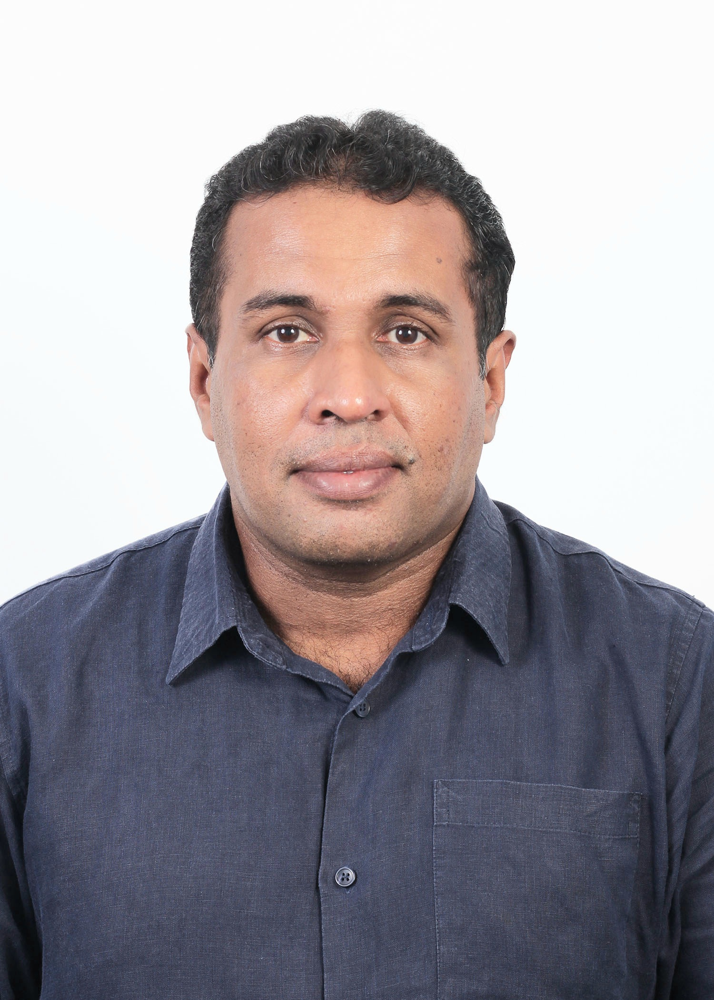

Nayake Wannigama

Summary
I am a Sri Lankan Electrical Engineer and a Lawyer
Education
- Bachelor of Engineering Honors - The Open University of Sri Lanka
- Bachelor of Laws Honors - The University of London
- Attorney-at-Law, Notary Public, Post Attorney Diploma in Corpotate Law - Sri Lanka Lawcollage
- Diploma in Arbitration - Institute for the Development of Commercial Law and Practice, Sri Lanka
Work Experience
Skills
- Deplomatic consulation on nationtionwide projects
- Office Suit
- Commercial Negotiation and Arbitration
Awards and Cerfication
- Best Urban Design_Hulhumale PhII, Town Infra_MEPi
Other
Ⓒ Nayake Wannigama. All rights reserved.